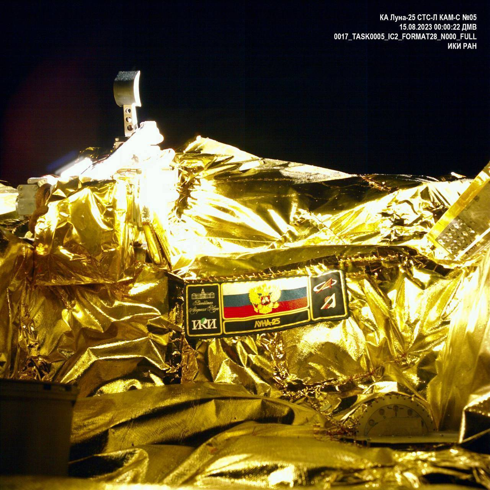

俄国家航天集团公布“月球-25”号探测器拍摄的照片

莫斯科时间16日，俄罗斯国家航天集团发布了“月球-25”号探测器使用自带摄像头拍摄的照片。 莫斯科时间11日2时10分（北京时间11日7时10分），“月球-25”号探测器搭乘“联盟-2.1b”运载火箭从位于俄远东地区阿穆尔州的东方航天发射场升空。 约1小时后，探测器与火箭上面级分离，开始飞往月球。该探测器预计于8月16日进入距月球表面约100公里的月球轨道，8月21日在月球南极的博古斯拉夫斯基陨石坑附近软着陆。如果成功，“月球-25”号将成为人类历史上首个在月球南极着陆的探测器。 “月球-24”号探测器于1976年发射，其返回器向地球运回了约170克月壤。俄罗斯塔斯社11日援引俄国家航天集团总裁鲍里索夫的话报道，俄罗 斯定于2027年发射“月球-26”号探测器，2028年发射“月球-27”号探测器，2030年或更晚些时候发射“月球-28”号探测器。
（总台记者 王斌）